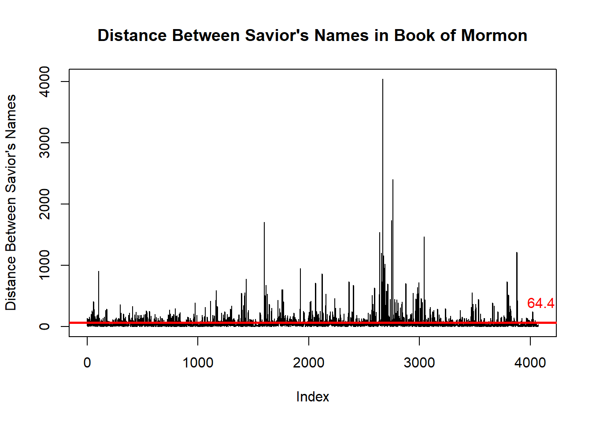
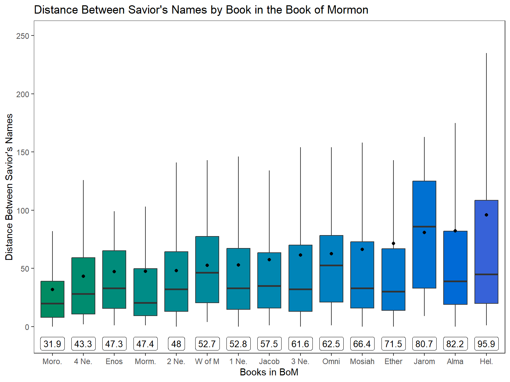

Code
library(tidyverse)
library(ggplot2)
library(ggrepel)
library(mosaic)
library(stringr)
library(stringi)
library(pander)
library(purrr)
library(readr)
library(rio)
library(forcats)library(tidyverse)
library(ggplot2)
library(ggrepel)
library(mosaic)
library(stringr)
library(stringi)
library(pander)
library(purrr)
library(readr)
library(rio)
library(forcats)scriptures <- import("http://scriptures.nephi.org/downloads/lds-scriptures.csv.zip") %>% as_tibble()
saviors_names <-read_rds("https://byuistats.github.io/M335/data/BoM_SaviorNames.rds") %>%
pull(name) %>%
str_c(collapse = "|")
bom <- scriptures %>%
filter(volume_title == "Book of Mormon")
dist_names <- function(dat, spl){
text <- dat %>%
pull(scripture_text) %>%
str_c(collapse = " ") %>%
str_split(pattern=spl) %>%
unlist()
len <- stri_count_words(text)
return(len)
}
nested_bom <- bom %>%
group_by(book_short_title) %>%
nest()
dist_between_bom <- nested_bom %>%
mutate(
dist_between = map2(.x=data, .y=saviors_names, .f=dist_names)
) %>%
select(book_short_title, dist_between) %>%
unnest(dist_between)bom_dist_names <- dist_names(bom, saviors_names)
average <- round(mean(bom_dist_names),2)
median <- median(bom_dist_names)
plot(bom_dist_names, type="l", ylab="Distance Between Savior's Names", main="Distance Between Savior's Names in Book of Mormon")
abline(average, 0, col="red", lwd=2.5)
text(4100, 400, labels = average, col="red")
This graph shows the distribution of distance between Savior’s names by Index, so it is in order according to the chronology of the Book of Mormon. The red line signifies the average distance between Savior’s names, which is 64.4 words in the Book of Mormon. The median, 33, is very different from the mean, nearly halving the word distance, this is caused by the numerous outliers in the data, which are the groups of spikes. The most significant spike being around index 2700, which I assume is Alma since it is a book directed at history and wars rather than passages about prophets’ ministries. There also appears to be a spike around Jarom, Omni, and Words of Mormon at about the 1600th index. Again this makes since because these books are more about wars than about the ministries of prophets.
mean_dist <- dist_between_bom %>%
group_by(book_short_title) %>%
summarise(
the_mean = round(mean(dist_between),1)
)
ggplot() +
geom_boxplot(data=dist_between_bom, aes(x=fct_reorder(book_short_title, dist_between, mean), y=dist_between, fill=reorder(book_short_title, dist_between, mean)), outlier.shape=NA) +
geom_point(data=mean_dist, aes(x=fct_reorder(book_short_title, the_mean), y=the_mean)) +
geom_label_repel(data=mean_dist, aes(x=reorder(book_short_title, the_mean), y=the_mean, label=the_mean), nudge_y = -10000, size=3.5, segment.color='transparent', max.overlaps=20) +
coord_cartesian(ylim = c(-10,250)) +
scale_fill_hue(h=c(170,260), l=45) +
theme_bw() +
theme(panel.grid = element_blank()) +
labs(
x="Books in BoM",
y="Distance Between Savior's Names",
title="Distance Between Savior's Names by Book in the Book of Mormon"
) +
guides(fill="none") +
theme_bw() +
theme(panel.grid = element_blank())
This graph shows the distribution of the Savior’s names throughout different books in the Book of Mormon. The boxplots are ordered by mean distance and the dots represent the means for each of the books, with the labels at the bottom showing the mean. Going back to the previous study we see that the average distance across the Book of Mormon was 64.4, we can see that Helaman has a larger mean at 95.9. This shows that, along with Alma, Helaman also was a part of the big spikes in distance between Savior’s names since the mean is affected by outliers.